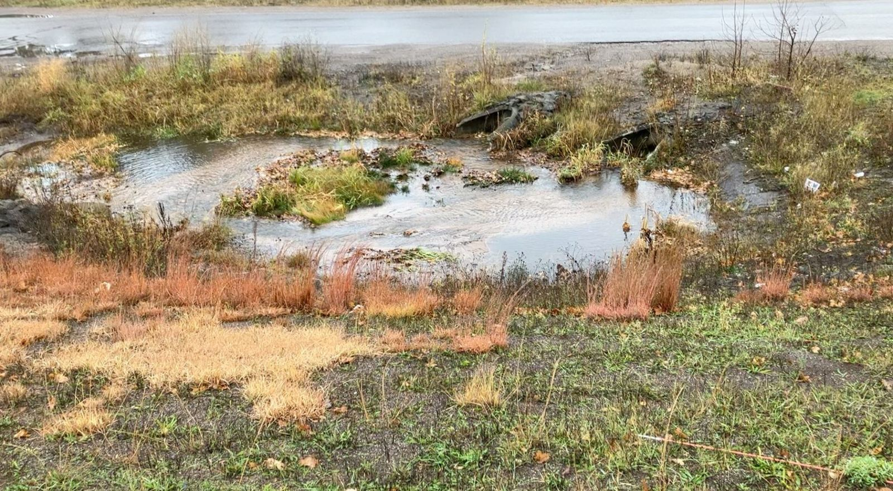

Millions of pounds of copper slag have sat on the Portage waterfront since the Quincy smelter closed in 1971. We think it should be removed, sold for the copper it still holds, and replaced with a public beach and park.
~12 acresof slag fields beside the Quincy smelter ruins
Up to 20 fttall piles, right on a protected waterway
3–6%copper still locked in the slag, plus lead and arsenic
Since 1971when the smelter last closed. The slag has not moved since.
The idea
Same view. Different shoreline.
This is the Quincy site from the hill above US-41, looking across the Portage toward Houghton and Michigan Tech. Drag the slider to compare today with the beach we're proposing.
TodayConcept
Left: photo of the site today. Right: a concept illustration, not an engineering design.
Explore the site
The slag fields in 3D
Aerial imagery draped over real elevation data for the Quincy smelter and its slag fields, with Houghton across the water. The copper outline marks the project area.
Loading the 3D view…
Drag to move. Right-drag or two fingers to tilt and turn.
Imagery: USGS The National Map (public domain). Elevation: AWS Terrain Tiles from USGS 3DEP. Heights are exaggerated 2.5× so the slag piles stand out.
The problem
What's sitting by the water
Slag is the waste left over from smelting metal. Keweenaw slag looks like sharp, black, glassy rock with streaks of green and red. It is mostly silica, but it also carries metals that are toxic to people, fish and plants.
Early 1900s smelting was far less efficient than today's, so Quincy's slag still holds a lot of copper. That makes it both a hazard and an opportunity.
The slag piles are made up of millions of these.
SiCFeCuPbAsCdZn
Scroll to break down one piece of slag
One piece of slag
What's inside?
Keep scrolling to see what this rock is made of, starting with the harmless parts.
SiMost of the rockMostly harmless
Silica
The bulk of slag is silica, the same stuff glass is made of. It gives slag its glossy, glassy look, and on its own it is largely harmless to people, fish and plants.
CTrapped in the glassMostly harmless
Carbon
Carbon caught inside the silica gives the slag its deep black color. In nature, carbon is a fertilizer.
FeRust-orange streaksMostly harmless
Iron
Iron oxidizes to orange rust, which explains the red streaks. Small amounts are part of a healthy diet and it is mostly viewed as nontoxic.
Then come the metals that make it dangerous.
Cu≈ 3–6% by weightToxic
Copper
Copper oxidizes to bright green. It is toxic to plants and, in high amounts, harmful to people and fish. It is also what makes the slag worth money.
Pb≈ 2–3% by weightToxic
Lead
Lead is spread all through the slag. It is extremely toxic to people and fish, and is infamous for damaging developing brains.
AsTrace amountsToxic
Arsenic
Arsenic is a known carcinogen. Long-term exposure to low doses is linked to kidney cancer, heart and blood vessel disease, and diabetes.
CdTrace amountsToxic
Cadmium
Cadmium is a known human carcinogen. It targets the kidneys, bones and lungs, and is toxic to plants and fish.
ZnTrace amountsToxic
Zinc
Zinc is needed in the human diet, but in excess it stops plant growth and harms fish.
The dangerous part, at a glance
29CuCopper≈ 3–6% by weight
Harmful to
People (in excess)
Fish & aquatic life
Plants
Needed in tiny amounts, but toxic to plants and to fish even at low levels in water. Large doses cause stomach, liver and kidney damage in people.
Hover or tap an element to see what it harms, with links to the government warning and Wikipedia. Ranges are estimates gathered for this project. The actual content of the Quincy piles has not yet been tested.
Why it doesn't stay put
Crushing rock into small pieces greatly increases its surface area, and more surface means more metal can leach out into water. That is what happened with the stamp sands around Torch Lake, where fish grew tumors and plant life died, and it prompted one of the area's first Superfund sites.
Slag behaves the same way over time. A U.S. Geological Survey study of slag piles found that weathering can release the trace metals trapped inside.
“Weathering of slag piles, many of which were deposited along stream banks, potentially may release these trace elements into the environment.”USGS Eastern Mineral and Environmental Resources Science Center
The Keweenaw's long freeze and thaw seasons crack the slag apart, much as they break up our roads. After rain, people have seen an oily sheen run off the fields into the bay.

Runoff pooling on the slag field beside the Portage.
What these metals do to people
Some metals, like copper and zinc, are needed in tiny amounts. Others are harmful at almost any level. These are the EPA drinking water limits for the metals found in the slag, with the health effects linked to long-term exposure.
Metal
EPA drinking water limit
Health effects
Lead (Pb)
0.010 mg/L action level*
Brain damage and lower IQ in children, kidney damage, anemia.
Arsenic (As)
0.010 mg/L
Known cause of skin, bladder and lung cancer. Skin lesions, nerve damage, blood vessel disease.
Cadmium (Cd)
0.005 mg/L
Known human carcinogen. Kidney failure, softening of the bones, lung damage.
Copper (Cu)
1.3 mg/L action level
Needed in small amounts. In excess it harms people and fish, and it is toxic to plants.
Zinc (Zn)
5 mg/L (secondary)
Needed in small amounts. In excess it stops plant growth and harms fish.
* Under the EPA's 2024 lead rule. The EPA's health goal for lead is zero.
Protected water. The Portage Lake canal, also called the Keweenaw Waterway, is a "connecting water" of Lake Superior. Michigan's water quality standards (Part 4, Rule 57) set strict limits on toxic substances, including heavy metals, entering it.
What we don't know yet. No one has tested whether the Quincy slag is leaching into the Portage right now. The research above says it's likely. Getting the slag and nearby water tested is the first step of this project.
The Quincy smelter in 1906. Photo courtesy of Michigan Tech Archives.
How it got here
A century of copper
Houghton was America's first mining boom town, and copper was king from the 1890s to the 1930s. The Quincy Smelting Works, on the Hancock side of the Portage below Mont Ripley, smelted billions of pounds of it and loaded freighters from its own docks.
The smelter is now a protected landmark, and the only copper smelter of its era still standing. This project is about the land next to it: roughly 12 acres of slag fields that no one uses.
Hover over or tap a year to see what happened since the date before it.
The Quincy smelter in 1906. Michigan Tech Archives.
Before 1898
Houghton is platted in 1854. The Keweenaw Waterway opens to ships in 1873, and the railroad reaches Houghton in 1883.
The Michigan College of Mines, now Michigan Tech, is founded in 1885.
For decades the Quincy Mining Company ships its ore to other companies' smelters. It builds its own to control quality and cost.
Construction starts in May 1898 on old stamp sands beside the Portage. The first furnace fires on December 1, 1898. Cost: $146,617.
Houghton's population in 1900: 3,359.
Copper ingots stacked on the Quincy smelter dock. Michigan Tech Archives.
1898 to 1931
Quincy's workforce grows from 450 in 1887 to over 1,700 by 1905. In 1905 the smelter has the lowest smelting cost in the district, $5.25 a ton.
Production peaks from 1909 to 1911. Houghton reaches 5,113 people in 1910.
The 1913–14 Copper Country strike shuts down the district. On Christmas Eve 1913, 73 people, 60 of them children, die in the Italian Hall disaster in Calumet.
World War I brings Quincy its biggest dividends in 1916–17, with copper averaging almost 29¢ a pound in 1917.
Prices crash after the war, from 18¢ in 1929 to 8¢ in 1931. The smelter shuts on September 22, 1931. Houghton is down to 3,757 people by 1930.
1931 to 1948
The Quincy mine closes from 1931 to 1936 and reopens in 1937, with its copper smelted by Calumet and Hecla.
World War II brings government contracts, and copper reaches 20¢ a pound by the war's end.
In 1942 Quincy builds a plant on Torch Lake to reclaim copper from old stamp sands. It starts running in November 1943.
The Quincy mine closes for good on September 1, 1945.
The smelter reopens in June 1948 to smelt the reclaimed copper.
The slag trestle and pile, documented by the Historic American Engineering Record. Michigan Tech Archives.
1948 to 1971
Reclamation is interrupted in January 1956, when a dredge is lost in a storm.
The stamp sands run out in 1967. Reclamation recovered about 50,000 tons of copper, compared with 424,000 tons the mine produced through 1945.
From 1968 one furnace melts scrap copper using natural gas.
In 1971 the smelter is abandoned after new Michigan environmental rules. The company locks the doors and leaves the buildings and slag in place.
Houghton grows to 6,067 people in 1970, the year it becomes a city.
1971 to 1986
In 1978 the Historic American Engineering Record documents the smelter in photos and drawings.
In 1986 Torch Lake, including the Quincy smelter area, goes on the EPA's National Priorities List because of mining waste in soil and water.
In 1989 the smelter is listed on the National Register as part of the Quincy Mining Company Historic District, a National Historic Landmark district.
1986 to 2004
Franklin Township acquires the smelter in 1999.
The EPA starts work on the smelter site in 2004.
The smelter from the Portage in the mid-2000s.
2004 to 2008
In 2007, at the urging of Senator Carl Levin, work begins to save the smelter buildings.
By 2008 the asbestos is gone, two smokestacks are repaired, and a chain-link fence surrounds the ruins.
Aerial view of the smelter and the two slag piles. Michigan Tech Archives.
2008 to 2013
The EPA's August 2013 rule takes the area off the Superfund list.
The land is restricted so no homes can be built on it because of the slag.
2013 to 2014
The Advisory Commission, created in 1992, buys the smelter from Franklin Township.
Plans to turn the site into a park and an Isle Royale National Park headquarters stall when their champion leaves in 2014.
2014 to 2016
It is described as the only copper smelter of its era left standing in the United States.
Guided tours run Monday to Saturday from late June to mid-October.
The slag fields today, from the hill above US-41.
Since 2016
Houghton has 8,386 people as of 2020.
The slag piles, up to 20 feet tall, still sit on the Portage beside the smelter.
Federal involvement
The EPA has done this here before
The Keweenaw has a long working relationship with the EPA and Michigan's environment agency (EGLE). Both have cleaned up mining waste along this waterway, sometimes quickly and under budget.
1986 – present
Torch Lake Superfund
Stamp sands and slag poisoned the water. Fish grew tumors. Contaminated tailings were capped with soil and plants.
After the cleanup, the land across from the old Michigan Smelter became a resort that opened in 2025. EGLE calls it an example of turning contaminated land into an asset.
When the EPA took the Quincy smelter area off the Superfund list in 2013, it treated the slag as stable, on the view that the glassy silica would hold the metals in. The land was restricted so that no homes could be built on it, and the slag stayed.
There were plans to turn the site into a park, including a new headquarters for Isle Royale National Park, but they stalled after the project's champion left in 2014.
Decades of freeze and thaw have weathered that slag since. The EPA and EGLE have said they want more chances to reclaim polluted land, and new testing could show the Quincy slag deserves a second look.
The slag pile beside the smelter, from the road above.
The plan
Sell the slag. Build the beach.
The slag that makes this land a liability may also pay to fix it. Here is the idea in five steps.
1
Test
Measure what's really in the slag and the nearby water, working with the EPA, EGLE and Michigan Tech researchers.
2
Remove
Use EPA cleanup guidelines and funding, with local construction crews doing the work.
3
Sell
Sell the copper-bearing slag on the open market. Shipping by barge from the site's old dock area is the cheapest route.
4
Build
Backfill with clean soil, lay sand, and use rock already on site to build a breakwater that protects the bay.
5
Reinvest
Put leftover revenue into a community fund that keeps paying for the park.
What the copper could be worth
Move the sliders to see how much copper could be in the slag fields and what it might sell for. Tap a market price to use it.
0.5%8%
exact±60%
Raw copper value
$25.0M
likely between $17.5M and $32.5M
$0$50M$100M+
Slag
~141 million lb
Copper
4.2 million lb
Slag weight is the midpoint of this project's rough estimate (97 to 185 million pounds), and the error range covers that uncertainty. These are raw metal values, not what a buyer would pay: refining and shipping cost money, and barging the slag about 2,000 miles to a smelter is estimated at $3.8–5.5 million. Copper content is the biggest unknown. A Michigan Tech study of the smelter says the slag dumped on the piles held less than 1% copper, while other estimates run 3–6%. Testing will settle it. Prices as of November 23, 2026.
The smelter from the water. The beach would sit beside it, facing Houghton.
What the park could hold
A pristine beach on a protected bay, with the best view of Houghton, and room for much more:
Kayak and canoe rentals
Winter skating on the bay
Native plant and monarch refuge
Walking and biking trails
Fishing docks
Markets and festivals
Outdoor classrooms
Sports areas
Community statue garden
Houghton already loves its waterfront spots: the Hancock Rec Center, Chutes and Ladders, East Houghton Waterfront Park and Prince's Point. One more would only help.
Why it's feasible
The Keweenaw has a long, successful history with the EPA.
The EPA can move fast here: the Michigan Smelter cleanup took 48 days.
The slag fields have no other planned use.
Federal cleanup funding could cover the big upfront costs.
Copper in the slag could offset cleanup costs.
Removing the slag reduces heavy-metal exposure and improves the water.
Construction and park jobs, and new small business opportunities.
More visitors and higher nearby property values grow the tax base.
Get involved
This belongs to Houghton
This isn't a money-driven effort. The goal is that the people of Houghton, who have lived next to this slag for decades, are the ones who benefit from removing it.
Here's how you can help right now:
Share this page with friends, neighbors and local groups.
Bring up the Quincy slag with your township, city council and state representatives.
If you research geology, water quality or mining waste, we'd like to talk about testing.